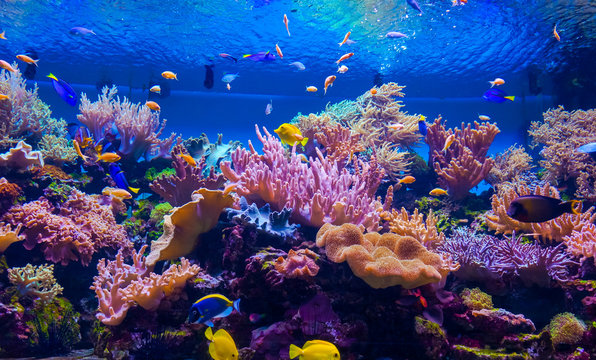

Insightful Trivia That Will Expand Your Mind...
Fact: Coral reefs are among the most diverse ecosystems on Earth
Coral reefs, often referred to as the "rainforests of the sea," are home to a stunning array of marine life, including thousands of species of fish, invertebrates, and plants. Despite covering less than 1% of the ocean floor, coral reefs support approximately 25% of all marine species.